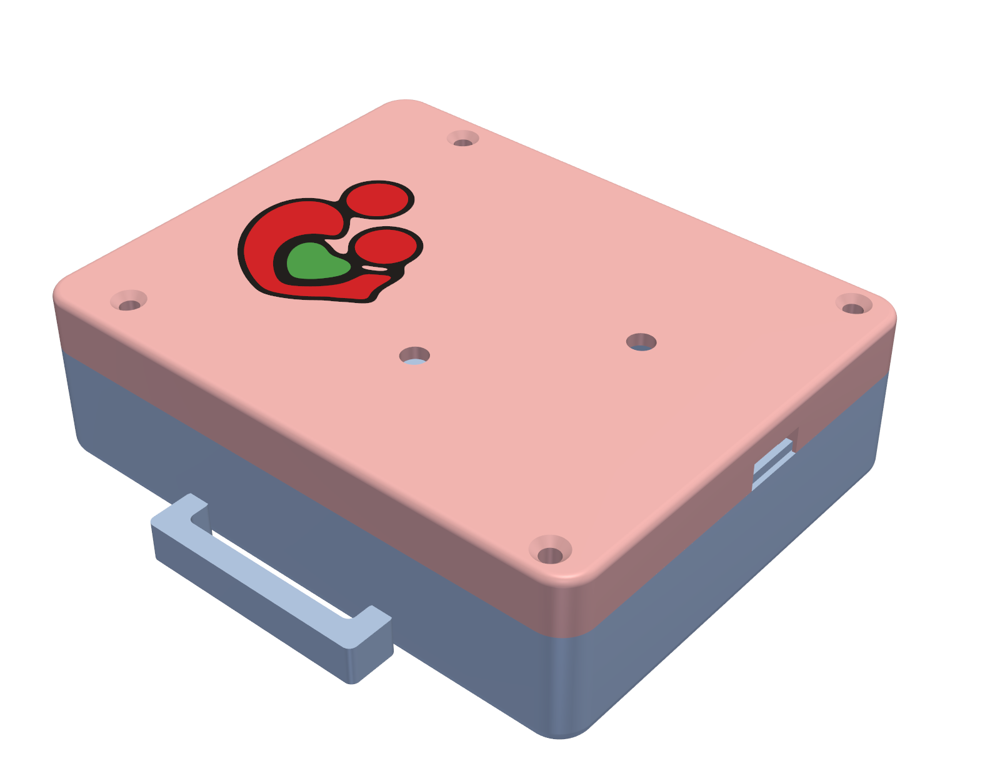
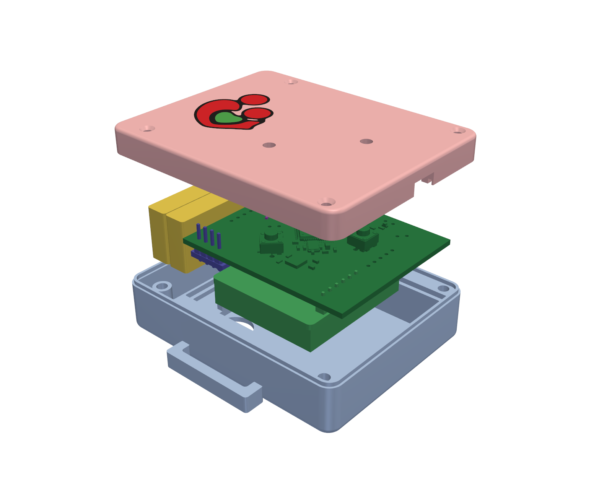
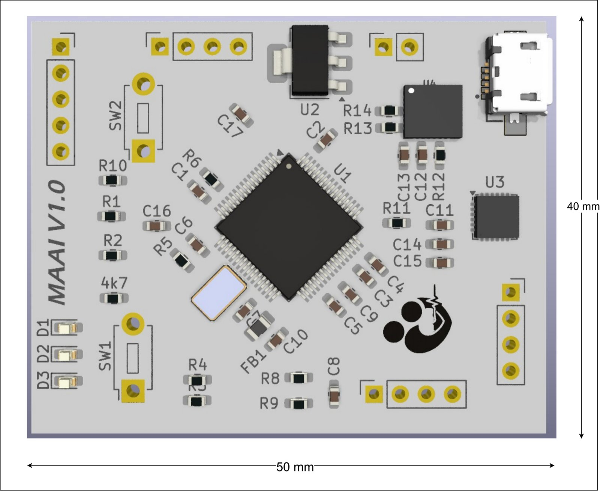
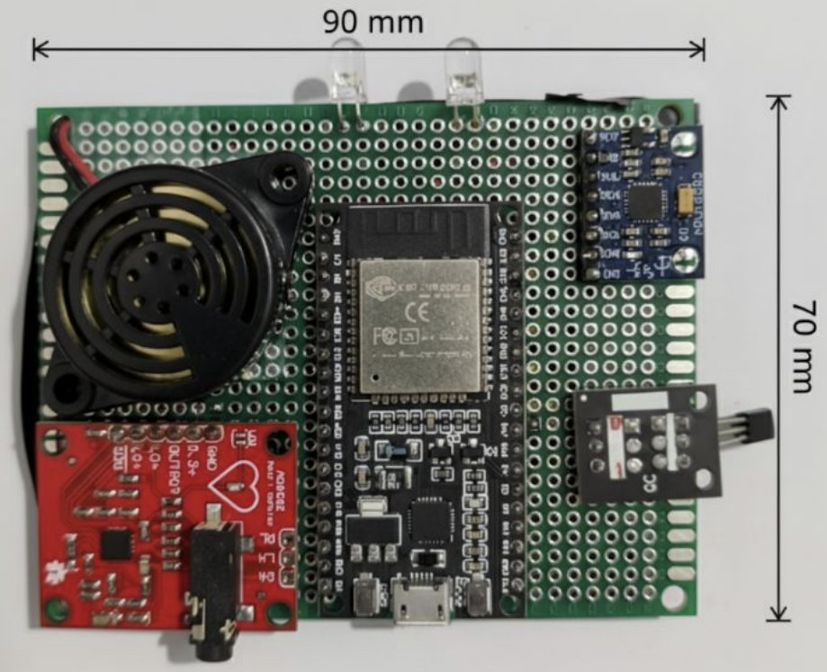
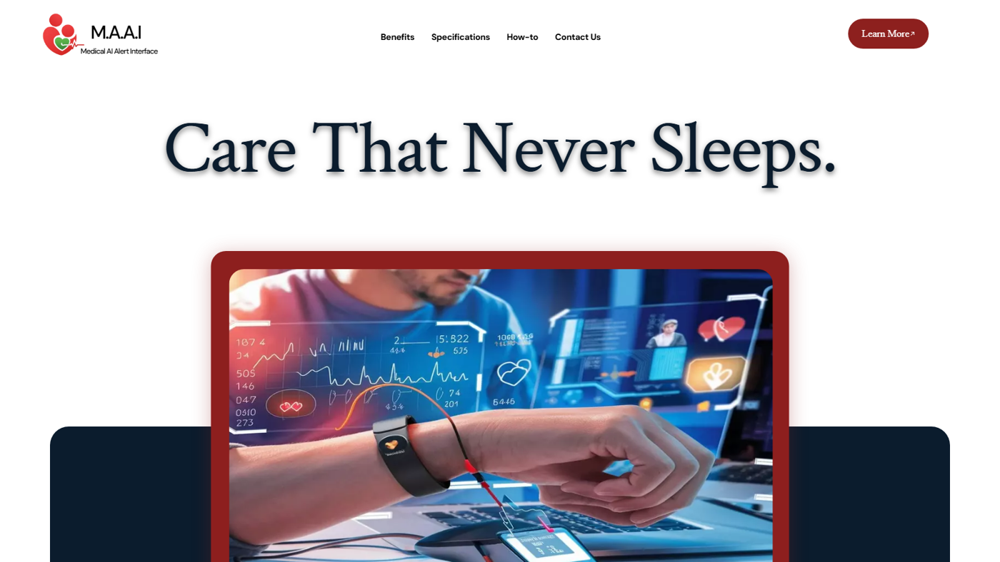

MAAI · Medical AI Alert Interface
Founder · Aug 2025 – presentAn AI-powered wearable that watches over elderly patients and alerts caregivers in real time
Named after the Hindi word for mother, MAAI is a startup I founded around a wearable that tracks vital signs and movement and raises alerts the moment something looks wrong. It started as a Smart India Hackathon entry and is now moving to a custom PCB and LTE.
- Tracks heart rate and SpO2 (MAX30102), ECG (AD8232), skin temperature (MLX90614) and motion (MPU6050); fall detection from the IMU.
- Working ESP32 + FreeRTOS prototype with task-scheduled sensing and MQTT streaming to a live caregiver dashboard (Node bridge, WebSocket, CSV fallback).
- Now porting to STM32F446RE on a custom 50 × 40 mm PCB with a Quectel EC200U LTE/GPS module for cellular caregiver alerts.
- Camera-side monitoring: MediaPipe pose estimation detects falls from torso angle and sudden hip drop, complementing the sensor data.
- Designed the two-part 3D-printed casing in CadQuery: PCB clamped by its edges, sensor apertures on the skin side, long-pin header stack so the pulse sensor sits 1 mm proud of the skin face, strap loops, engraved logo.
ESP32STM32F446REFreeRTOSMQTTEC200U LTE/GPSMediaPipeCadQuery